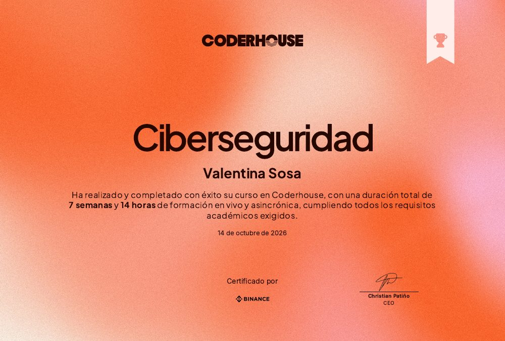

Gestión de exportaciones marítimas
Aplicación SAP para el seguimiento de operaciones de exportación de embarcaciones: estados, documentación asociada y consultas sobre datos de negocio en tiempo real.
Construyo soluciones empresariales de punta a punta: del modelado del proceso de negocio y el backend ABAP, a interfaces Fiori que la gente usa todos los días.
Soy desarrolladora de software con más de 2 años de experiencia en el ecosistema SAP e Ingeniera en Sistemas de Información (UTN). Trabajo el ciclo completo de desarrollo: relevamiento de requerimientos con consultores funcionales, implementación backend en ABAP, servicios OData y aplicaciones SAP UI5/Fiori.
Mi formación previa en Economía y Administración me da una mirada analítica sobre los procesos de negocio: entiendo qué problema resuelve cada desarrollo antes de escribir la primera línea de código.
Aplicación SAP para el seguimiento de operaciones de exportación de embarcaciones: estados, documentación asociada y consultas sobre datos de negocio en tiempo real.
Los proyectos profesionales se describen de forma general para proteger la confidencialidad de los clientes.
Plataforma web para la publicación y contratación de servicios entre usuarios. Incluye registro, gestión de perfiles, publicación de servicios con imágenes, sistema de reseñas y panel de administración. Desarrollada en equipo con metodología Scrum.
Sitio web multipágina del curso de Desarrollo Web (Coderhouse): un archivo ficticio de casos históricos sin resolver, con portada, catálogo, expedientes, teorías y formulario de contacto. Diseño mobile first y responsive.
Sistema IoT integrado: frontend Vue.js, backend Django y sensor físico programado en Arduino que detecta disponibilidad de espacios en tiempo real. Incluye registro de usuarios y visualización de ocupación.
Desarrollado de punta a punta: backend PHP (CodeIgniter), frontend Vue.js y base de datos relacional. Dirigido con metodología híbrida PMBOK + Scrum en 8 sprints, con más de 30 requerimientos trazados, pruebas unitarias con PHPUnit y un 95% de cumplimiento del cronograma.

Curso completado con formación en vivo y asincrónica, cumpliendo todos los requisitos académicos exigidos.
Curso completado con formación en vivo y asincrónica, cumpliendo todos los requisitos académicos exigidos.
Estoy abierta a nuevas oportunidades en desarrollo SAP y otras áreas de IT. Escribime y te respondo a la brevedad.
valeensoosa@gmail.com